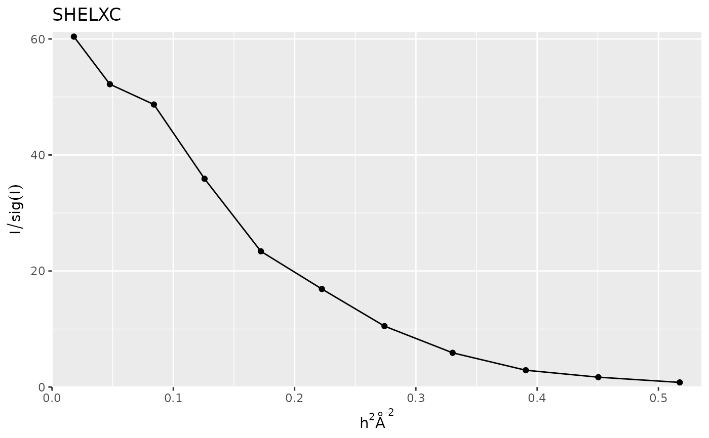
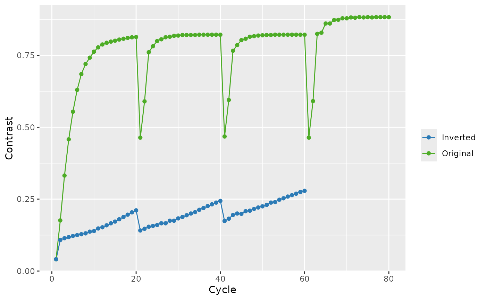

Plot SHELXC log files
plot_SHELX.RdPlot SHELXC log files
Examples
datadir <- system.file("extdata",package="cry")
## SHELXC
shelxc_log <- file.path(datadir,"shelxc.log")
shelxc <- read_SHELX_log(shelxc_log)
plot_shelxc <- plot_SHELX(filename = shelxc, var = shelxc$I_sig,
type = "shelxc", title_chart = "SHELXC")
plot_shelxc

## SHELXD
shelxd_log <- file.path(datadir,"shelxd.log")
shelxd <- read_SHELX_log(shelxd_log)
plot_shelxd <- plot_SHELX(filename = shelxd, type = "shelxd",
title_chart = "SHELXD")
plot_shelxd
## SHELXE
filename_i <- file.path(datadir,"shelxe_i.log")
shelxe_i <- read_SHELX_log(filename_i)
filename_o <- file.path(datadir,"shelxe_o.log")
shelxe_o <- read_SHELX_log(filename_o)
plot_shelxe <- plot_SHELX(filename = shelxe_i,
filename_e = shelxe_o, type = "shelxe", title_chart = "SHELXE")
plot_shelxe
